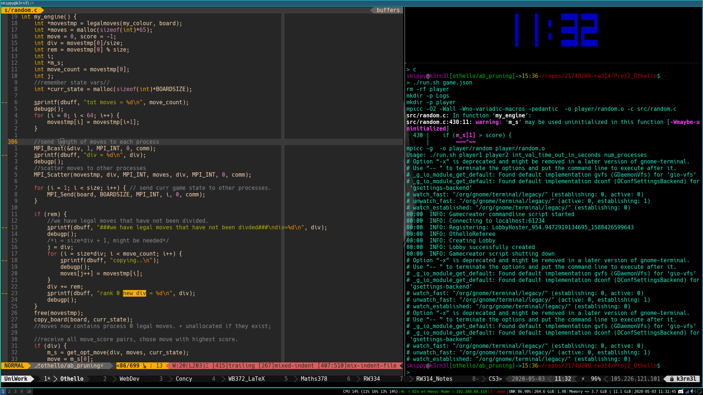
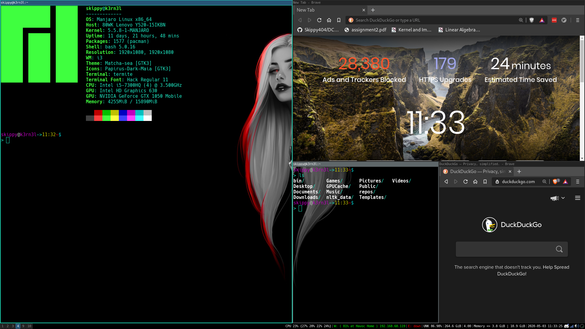
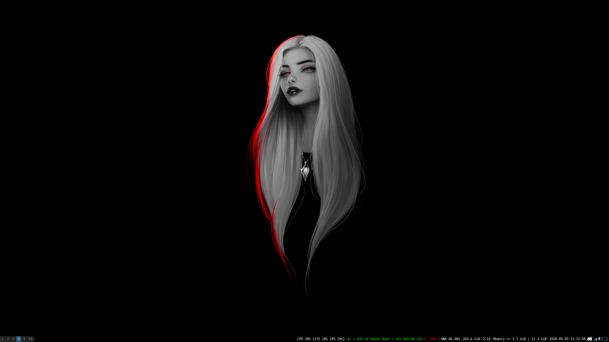

🅱️ HOME 🅱️
+-------------------------------------------------------+
| |
| Operating System & Desktop Environment |
| |
| * Currently I am running Manjaro Linux |
| |
| * As for desktop environment, A only use i3, it |
| fits my workflow perfectly, and I have spent |
| the last few years perfecting it, I dont need |
| a mouse, all I need is a keyboard, and I am |
| comfortable |
| |
+-------------------------------------------------------+
+-------------------------------------------------------+
| |
| Workflow |
| |
| * My workflow is simple: i3 + terminal + tmux + vim, |
| once I have these, I am in my happy place, and |
| produce really nice code. |
| |
| * I have recently peaked interest into dwm by |
| suckless, and have considered switching from i3, |
| owing to the implementation (cleaner) and the |
| the fact that a stack is used to hold panes, |
| opposed to the i3 approach which 'stores' panes |
| in a tree like structure, which is not as |
| 'nice' as a stack implementation. |
| |
| * I have written a script that sets up my workspace, |
| and install's dependencies, this script can be |
| downloaded here. |
| |
| * You can also get vim, tmux, i3 configs on thier |
| own. |
| |
+-------------------------------------------------------+
+-------------------------------------------------------+
| |
| Pictures |
| |
| * Image 1: An example of a normal working session |
| using tmux, with vim open. |
| |
| * Image 2: An example of programs being tiled. |
| |
| * Image 3: An example of an empty workspace. |
| |
+-------------------------------------------------------+
Image 1:

Image 2:

Image 3:
